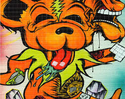
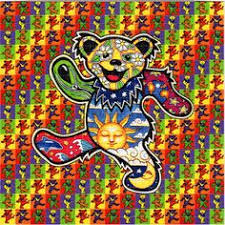
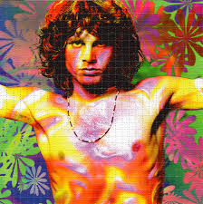
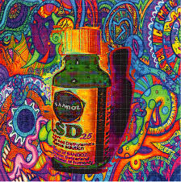
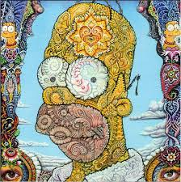
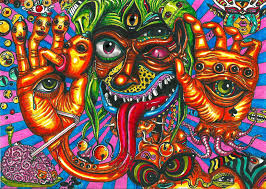
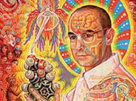
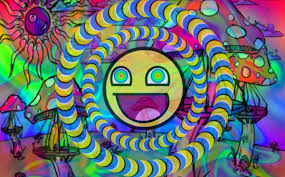
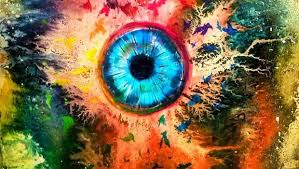

Albert Hofmann, a chemist working for Sandoz Pharmaceutical, synthesized1 LSD for the first time in 1938, in Basel, Switzerland, while looking for a blood stimulant. However, its hallucinogenic effects were unknown until 1943 when Hofmann accidentally consumed some LSD. It was later found that an oral dose of as little as 25 micrograms (equal in weight to a few grains of salt) is capable of producing vivid hallucinations.
Because of its similarity to a chemical present in the brain and its similarity in effects to certain aspects of psychosis, LSD was used in experiments by psychiatrists through the 1940s, ’50s and ’60s. While the researchers failed to discover any medical use for the drug, the free samples supplied by Sandoz Pharmaceuticals for the experiments were distributed broadly, leading to wide use of this substance.
LSD was popularized in the 1960s by individuals such as psychologist Timothy Leary, who encouraged American students to “turn on, tune in, and drop out.” This created an entire counterculture of drug abuse and spread the drug from America to the United Kingdom and the rest of Europe. Even today, use of LSD in the United Kingdom is significantly higher than in other parts of the world.
While the ‘60s counterculture used the drug to escape the problems of society, the Western intelligence community and the military saw it as a potential chemical weapon. In 1951, these organizations began a series of experiments. US researchers noted that LSD “is capable of rendering whole groups of people, including military forces, indifferent to their surroundings and situations, interfering with planning and judgment, and even creating apprehension, uncontrollable confusion and terror.”
Experiments in the possible use of LSD to change the personalities of intelligence targets, and to control whole populations, continued until the United States officially banned the drug in 1967. Use of LSD declined in the 1980s, but picked up again in the 1990s. For a few years after 1998 LSD had become more widely used at dance clubs and all-night raves by older teens and young adults. Use dropped significantly in 2000 or so.
    